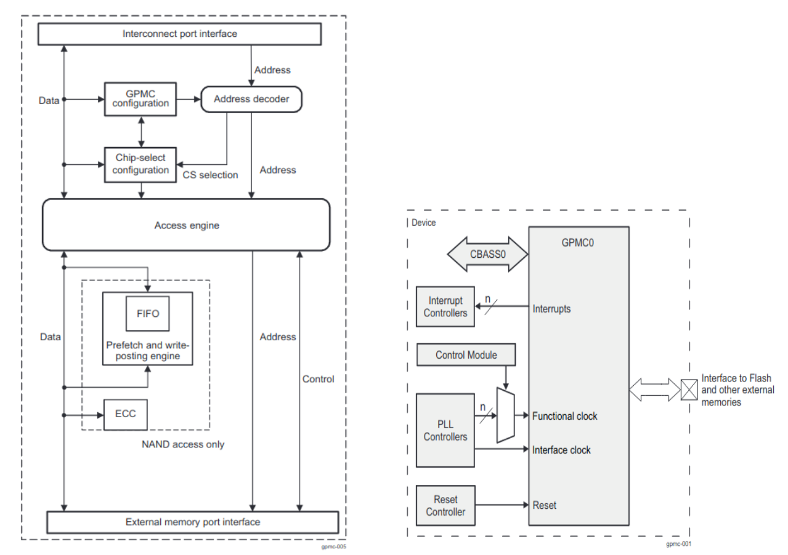

The General-Purpose Memory Controller (GPMC) is an unified memory controller dedicated to interfacing external memory devices like
- Asynchronous SRAM like memories and application specific integrated circuit devices
- Asynchronous, synchronous, and page mode burst NOR flash devices
- NAND flash
- Pseudo-SRAM devices
The Error Location Module (ELM) module works in conjunction with the GPMC and has the following main features: ECC calculations (up to 16-bit) for NAND support and ability to work in both page-based and continuous modes
- 4, 8, and 16 bits per 512-byte block error-location, based on BCH algorithms
- Eight simultaneous processing contexts
- Page-based and continuous modes
- Interrupt generation on error-location process completion
Features Supported
- 8-bit wide data path to external memory device
- Supports up to 4 chip select regions of programmable size and programmable base addresses in a total address space of 1GB
- Supports on-the-fly error code detection using the Bose-Chaudhuri-Hocquenghem (BCH) 8-bit.
- Fully pipelined operation for optimal memory bandwidth usage
- The clock to the external memory is provided from GPMC_FCLK divided by 1, 2, 3, or 4
- Supports programmable autoclock gating when no access is detected
- Independent and programmable control signal timing parameters for setup and hold time on a per-chip basis. Parameters are set according to the memory device timing parameters with a timing granularity of one GPMC_FCLK clock cycle.
- Flexible internal access time control (wait state) and flexible handshake mode using external WAIT pin monitoring
- Support bus keeping
- Support bus turnaround
- Prefetch and write-posting engine associated with DMA controller at system level to achieve full performance from the NAND device with minimum effect on NOR/SRAM concurrent access
- 32-bit interconnect target interface which supports non-wrapping and wrapping burst of up to 16x32 bits
- Flexible synchrnonisation of NAND R/B signal with WAIT PINs.
SysConfig Features
- Note
- It is strongly recommend to use SysConfig where it is available instead of using direct SW API calls. This will help simplify the SW application and also catch common mistakes early in the development cycle.
- Set input clock frequency and clock divider
- Set interrupt trigger type
- Configuring pinmux based on selected pin
- Enable or disable DMA (By default DMA is enabled)
Features NOT Supported
- Multiple write access in asynchronous mode is not supported
- Multiple read access in asynchronous mode is not supported in address/data-multiplexed and AAD- multiplexed modes
- Interupt mode is not supported.
GPMC Overview
The GPMC basic programming model offers maximum flexibility to support various access protocols for each of the four configurable chip-selects. Use optimal chip-select settings, based on the characteristics of the external device:
- Different protocols can be selected to support generic asynchronous or synchronous random-access devices (NOR flash, SRAM) or to support specific NAND devices.
- The address and data bus can be multiplexed on the same external bus.
- Read and write access can be independently defined as asynchronous or synchronous.
- System requests (byte, 16-bit word, burst) are performed through single or multiple accesses. External access profiles (single, multiple with optimized burst length, native- or emulated-wrap) are based on external device characteristics (supported protocol, bus width, data buffer size, native-wrap support).
- System burst read or write requests are synchronous-burst (multiple-read or multiple-write). When neither burst nor page mode is supported by external memory or ASIC devices, system burst read or write requests are translated to successive single synchronous or asynchronous accesses (single reads or single writes). 8-bit wide devices are supported only in single synchronous or single asynchronous read or write mode.
- To simulate a programmable internal-wait-state, an external WAIT pin can be monitored to dynamically control external access at the beginning (initial access time) of and during a burst access. Each control signal is controlled independently for each chip-select. The internal functional clock of the GPMC (GPMC_FCLK) is used as a time reference to specify the following:
- Read- and write-access duration
- Most GPMC external interface control-signal assertion and deassertion times
- Data-capture time during read access
- External wait-pin monitoring time
- Duration of idle time between accesses, when required
Below figure shows the GPMC functional block diagram. The GPMC consists of six blocks:
- Interconnect port interface
- Address decoder, GPMC configuration, and chip-select configuration register file
- Access engine
- Prefetch and write-posting engine
- Error correction code engine (ECC)
- External device/memory port interface

GPMC FUNCTIONAL BLOCK DIAGRAM
The GPMC can access various external devices. The flexible programming model allows a wide range of attached device types and access schemes. Based on the programmed configuration bit fields stored in the GPMC registers, the GPMC can generate the timing of all control signals depending on the attached device and access type. Given the chip-select decoding and its associated configuration registers, the GPMC selects the appropriate control signal timing for the device type
ECC Calculator
- The GPMC includes an error code correction (ECC) calculator circuitry that enables ECC calculation on the fly during data read or data program (that is, write) operations. The page size supported by the ECC calculator in one calculation/context is 512 bytes.
- The user can choose from two different algorithms with different error correction capabilities through the GPMC_ECC_CONFIG[16] ECCALGORITHM bit:
- Hamming code for 1-bit error code correction on 8- or 16-bit NAND flash organized with page size greater than 512 bytes
- Bose-Chaudhurl-Hocquenghem (BCH) code for 4- to 16-bit error correction The GPMC does not handle the error code correction directly. During writes, the GPMC computes parity bits. During reads, the GPMC provides enough information for the processor to correct errors without reading the data buffer all over again.
- The Hamming code ECC is based on a 2-dimensional (2D) (row and column) bit parity accumulation. This parity accumulation is accomplished on the programmed number of bytes or 16-bit words read from the memory device, or is written to the memory device in stream mode.
- Because the ECC engine includes only one accumulation context, it can be allocated to only one chip-select at a time through the GPMC_ECC_CONFIG[3-1] ECCCS bit field. Even if two chip-selects use different ECC algorithms, one the Hamming code and the other a BCH code, they must define separate ECC contexts because some of the ECC registers are common to all types of algorithms.
Example Usage
Include the below file to access the APIs
#include <stdio.h>
#include <drivers/gpmc.h>
GPMC Instance Open
GPMC Instance Close
API
APIs for GPMC
 1.8.20
1.8.20